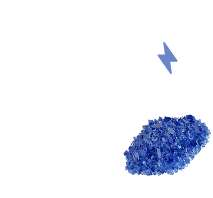

Do you ever think about what powers your smartphone?
Your smartphone is powered by lithium-ion batteries, which require cobalt as the main ingredient. The search and extraction of cobalt is extremely dangerous.

How many children and young adults work in the mines?
According to the Washington Post, no one has the total number of child laborers working in cobalt mines in the DRC. The situation in the DRC is unfortunate and can only be studied by conducting often dangerous fieldwork. However, we do know an estimate of the number of children in 2016 based on data used in the bottom graph. We find that many children in the DRC work outside the home, usually in mining and agriculture. Children at young ages attend school, but often drop out when they get older to work in cobalt mining to support their family.
Why are these children working?
Based on our findings, we realized that there are years of missing data on the number of working children in the mines of the DRC. Based on a recent report, we were able to estimate that the number of children working in the mines almost equal those who attend school, signifying that mining is a part of their upbringing. Based on the global cobalt production and YoY smartphoen sales, we can visually represent that a large percentage of workers mining cobalt for smartphones are in fact young adults and children.
If you'd like to learn more about this issue, I suggest reading The Cobalt Pipeline, published by the Washington Post.